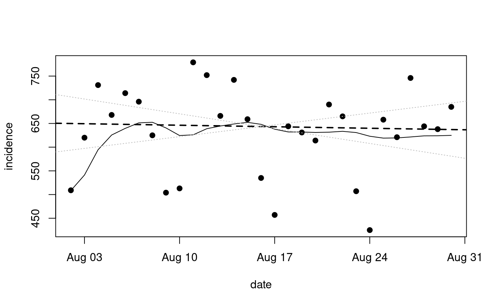

Use Rob Hyndman's forecast package to estimate drift in ARIMA models
Source:R/Arima.R
Arima_by_state.RdUse Rob Hyndman's forecast package to estimate drift in ARIMA models
Arima_by_state( src, state.in = "New York", MAorder = 2, Difforder = 1, basedate = "2020-02-15", lookback_days = 29, ARorder = 0, max_date = NULL )
Arguments
| src | a tibble as returned by nytimes_state_data() or jhu_us_data() |
|---|---|
| state.in | character(1) state name |
| MAorder | numeric(1) order of moving average component |
| Difforder | numeric(1) order of differencing d in ARIMA(p,d,q) |
| basedate | character(1) used by lubridate::as_date to filter away all earlier records |
| lookback_days | numeric(1) only uses this many days from most recent in src |
| ARorder | order of autoregressive component |
| max_date | a date from which to start lookback ... defaults to NULL in which case the latest available date is used |
Value
instance of S3 class Arima_sars2pack
Examples
#>mb = min_bic(nyd, state.in="New York") lkny = Arima_by_state(nyd, ARorder=mb$opt["ARord"], MAorder=mb$opt["MAord"]) lkny#> Arima_sars2pack instance for New York #> computed Mon Aug 10 03:47:50 2020 #> last date used was: 2020-08-08 #> call was: Arima_by_state(src = nyd, MAorder = mb$opt["MAord"], ARorder = mb$opt["ARord"]) #> Model estimates: #> Series: tsfull #> ARIMA(4,1,3) with drift #> #> Coefficients: #> ar1 ar2 ar3 ar4 ma1 ma2 ma3 drift #> 0.5905 -0.6447 0.0189 -0.5455 -2.0859 2.0859 -1.0000 -4.3817 #> s.e. 0.1671 0.1917 0.1900 0.1607 0.1916 0.3138 0.2055 0.8968 #> #> sigma^2 estimated as 5587: log likelihood=-162.23 #> AIC=342.45 AICc=352.45 BIC=354.44 #> #> Training set error measures: #> ME RMSE MAE MPE MAPE MASE #> Training set -0.2046435 62.07242 49.60402 -1.009573 7.451711 0.4478919 #> ACF1 #> Training set -0.1326532plot(lkny)usd = jhu_us_data() lkny2 = Arima_by_state(usd, ARorder=mb$opt["ARord"], MAorder=mb$opt["MAord"]) lkny2#> Arima_sars2pack instance for New York #> computed Mon Aug 10 03:47:55 2020 #> last date used was: 2020-08-08 #> call was: Arima_by_state(src = usd, MAorder = mb$opt["MAord"], ARorder = mb$opt["ARord"]) #> Model estimates: #> Series: tsfull #> ARIMA(4,1,3) with drift #> #> Coefficients: #> ar1 ar2 ar3 ar4 ma1 ma2 ma3 drift #> 0.5967 -0.6531 0.0238 -0.5442 -2.0864 2.0863 -0.9999 -4.3209 #> s.e. 0.1676 0.1926 0.1909 0.1612 0.1914 0.3128 0.2045 0.9044 #> #> sigma^2 estimated as 5661: log likelihood=-162.38 #> AIC=342.77 AICc=352.77 BIC=354.76 #> #> Training set error measures: #> ME RMSE MAE MPE MAPE MASE #> Training set -0.4864482 62.48187 49.79938 -1.061435 7.488967 0.449366 #> ACF1 #> Training set -0.1344349plot(lkny2)